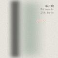
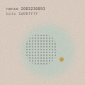

Your entire wallet grows from one random number (see Private Keys). Normally you trust a device to pick that number for you. This guide shows you how to pick it yourself, with dice, and have it turned into words by a signer you built, so the randomness provably comes from your own hands and your words never touch a computer. After a 2026 firmware flaw in a popular commercial signing device turned out to have silently weakened device-generated seeds for five years, this stopped being a paranoid hobby and became plain good practice.
Why Not Trust the Device?
When a wallet generates a seed for you, you are trusting three things: that its random number generator is strong, that its code has no bugs or backdoors, and that the device was not tampered with before it reached you. Any one failure can produce a seed an attacker can guess. Dice remove all three trust assumptions at once. You make the randomness, you see every roll, and nobody can weaken physics. The signer only does the arithmetic, its code is open for anyone to read, and it forgets everything the moment you unplug it.
What You Need
- Dice. Casino-grade if you can get them; a handful at a time speeds things up.
- A signer you built yourself: a SeedSigner or a Krux, running firmware you verified before flashing. Neither has WiFi or Bluetooth, and a SeedSigner stores nothing at all.
- Pen and paper for the first copy of your words.
- A steel backup plate for the final seed. Paper burns and fades; steel does not.
- Privacy. No cameras, no phones, no smartwatches, no observers. Treat the session like handling the money itself, because you are.
The Method: Roll Your Dice Into Your Signer

You never choose or type a word. You only enter the dice rolls, and the signer turns them into words for you to copy down.
- Power on your signer somewhere private, with no phones in the room.
- Start a new seed from dice. On a SeedSigner: Tools, then the new-seed option using dice rolls, then choose 24 words. Krux has the same option for a six-sided die.
- Roll and enter every roll, exactly as it lands. For 24 words a SeedSigner asks for 99 rolls. Don't skip, re-roll or "fix" a result; the point is that you don't choose.
- Copy the 24 words onto paper, in order, as the signer shows them. The 24th word is already done for you (see below).
- Confirm them. The signer asks you to pick some of the words back to prove your copy is right. Take your time.
- Unplug it. A SeedSigner forgets the seed the moment the power goes. From now on, your words exist only on your paper, and soon your steel.
Where the 24th Word Comes From

A 24-word seed carries 256 bits. The first 23 words hold 253 of them, and word 24 holds the last 3 plus an 8-bit checksum: the first 8 bits of the SHA-256 hash of the whole 256. That checksum is what lets any wallet catch a mistyped or mis-stamped seed later.
SHA-256 is the one step you genuinely can't do with pencil and paper. That is exactly why this guide puts the dice into the signer: it hashes your rolls into 256 bits, works out the checksum, and hands you a complete, valid 24th word. You never have to type 23 words into a calculator, a script or a website to "finish" a seed, and you never should. Any tool that asks you to is asking for your keys.
Why 99 rolls? Each roll of a six-sided die carries about 2.58 bits of randomness, and 99 of them add up to just over 255 bits. Because the signer hashes the rolls rather than reading them directly, a slightly worn die can't skew the result.
After the Roll
Stamp the words into steel, then destroy the paper copy. Before the seed ever holds serious money, run a full backup verification on your own signer, and for real savings, make this seed one key of a 2-of-3 multisig rather than a wallet on its own.
⚠️ Never type your words into anything. Not a computer, not a phone, not a script, not a wallet app, not a "seed checker" website. Your words should only ever exist on paper and steel, and inside your own offline signer while it is powered on. Anything that asks you to type them in is a scam or a mistake, and a seed that has been typed into a connected device should be treated as burned: make a new one and move the funds.
⚠️ No recovery exists. There is no support line and no password reset. A seed recorded with one wrong word, or photographed for convenience, is a seed that will eventually lose money. Take the time this deserves, alone, offline, on paper then steel.
Go deeper. Set up your signing device, verify the backup, and build toward a 2-of-3 multisig before funding it. Questions? Bring your dice to a meetup.